♠ ♥ ♣ ♦
赌神系统
我在融资牌桌上开了透视挂
第一章 · 底牌
ACT 1 · 融资路演惨败
融资路演的第47分钟。我讲完了最后一页PPT，会议室里安静得能听见中央空调嗡嗡响。
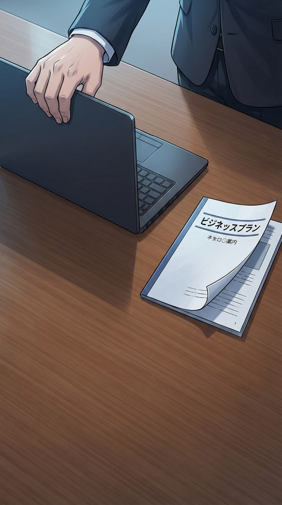
对面的人一个个合上了笔记本。这是拒绝的通用肢体语言——我已经见过127次了。
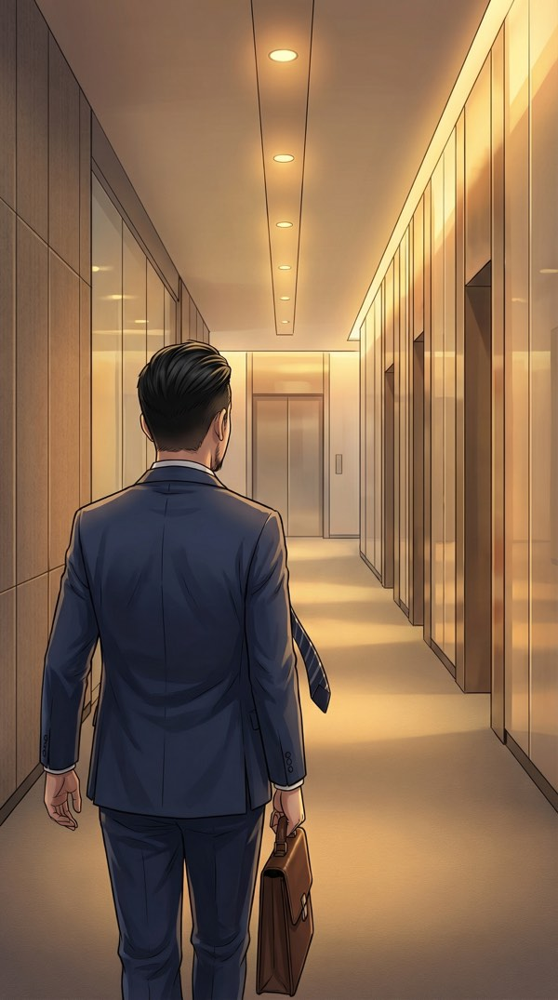
第128次被拒绝。不是不习惯了，是习惯了之后那种麻木，比第一次被拒还难受。
不过至少这次没人说"你的项目很有意思但不是我们现阶段关注的方向"……算了，有三个人说了。
电梯里翻了一眼手机，账上的钱还能撑45天。
45天。连一个投资人的决策周期都不够。
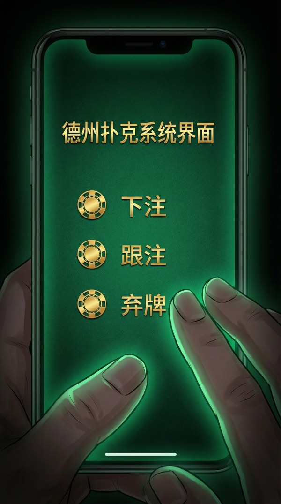
手机屏幕突然黑了一秒，然后变成了一片墨绿色。
像赌场牌桌的那种绿。
♠ PokerOS v1.0 — 开局
检测到宿主处于高压博弈场景……
初始化中……
█████████████████ 100%
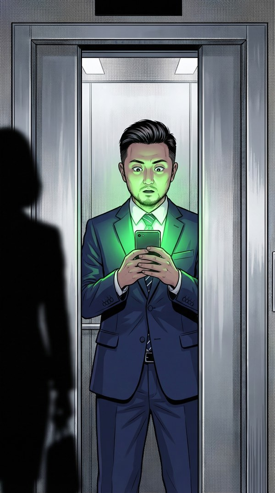
屏幕上弹出一行字。语气像个赌场老炮儿在跟新手说话。
我下意识往外走了一步——然后低头看了眼那行字，忍不住嘴角抽了一下。什么鬼。
老板，别发愣了，电梯门开了。——你的荷官PokerOS
我坐下来仔细看了看这个"PokerOS"。它说自己是"商业博弈辅助系统"，能让我在谈判中"看到对手的底牌"。
初始筹码: 1000 |
等级: 菜鸟
今日可用读牌次数: 3
每次读牌消耗: 100-300筹码
筹码恢复方式: 赢得真实商业博弈
听起来像个手游内购骗局？老板，你伤了系统的心。
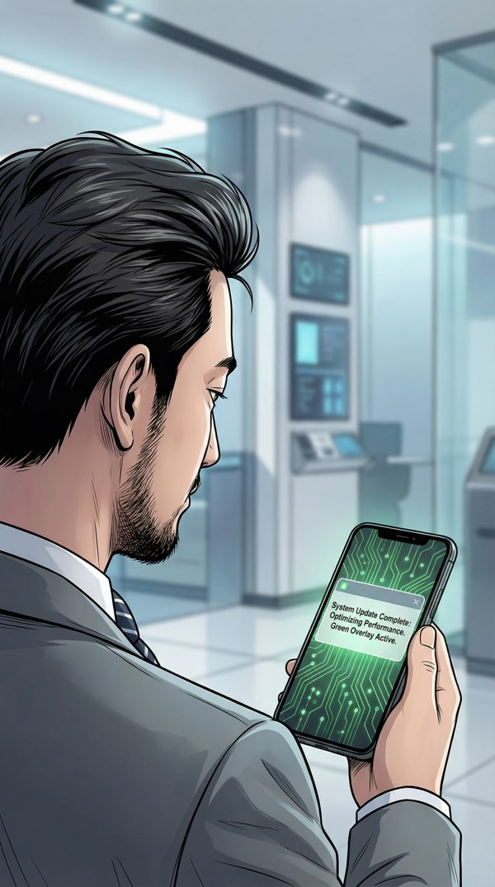
通知弹出来的时候，PokerOS的弹幕也跟着出来了。这效率倒是快。
陈薇……是刚才坐在角落里唯一没合笔记本的那个人。
📩 陈薇（鼎新资本）:
"朱总，刚才没来得及聊。方便明天上午coffee chat吗？"
检测到潜在牌局。难度评估：★★☆☆☆。建议接受。——你的荷官
我回了三个字："好，约。"
管它是什么系统，明天先试试。反正最坏的结果也不过是第129次被拒——那又怎样。
ACT 2 · 第一次读牌
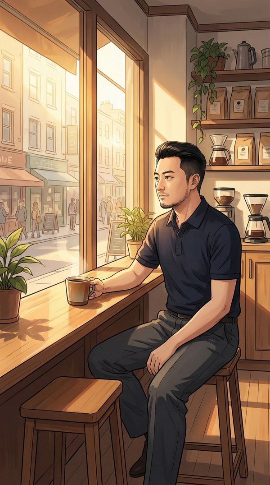
第二天上午十点，阳光很好。我提前到了十五分钟。这是我从第一次融资就养成的习惯——提前到，观察环境，让自己进入状态。
PokerOS在口袋里安静着，像一张没翻开的底牌。
陈薇准时到。短发，黑色套装，红色耳钉——像一颗精确的子弹。
我之前见过上百个投资人，能在路演结束后主动约聊的，不到5%。
前三分钟是标准寒暄。天气、咖啡、附近新开的餐厅。
我知道她在观察我，我也在观察她。
她突然切入正题："你们的DAU增长曲线，昨天路演里没展开讲。我想看细节。"
笔记本上写满了笔记——她在昨天路演时真的在认真听。
我展示了后台数据。用户增长不算炸裂，但留存率很漂亮——7日留存42%，30日留存28%。
在AI短剧赛道，这个数字相当于在跟投资人说"我的内容有毒，看了就戒不掉"。
她的表情变了。只有一瞬间，嘴角抿了一下。
在投资人的poker face训练里，这算是巨大的破绽了。
口袋里的手机震了一下。
⚡ 检测到对手情绪波动
是否读牌？
消耗筹码: 200
[🃏 读牌] [放弃]
⚡ DECISION-1 ⚡
B) 不读，靠自己判断继续聊
C) 假装不经意问一句试探性问题
A) 读牌——消耗200筹码，看陈薇的真实想法
第一次用，先试试水深。200筹码换一次情报，如果这系统是真的，值了。——黑客遇到新系统的第一反应永远是：先跑一遍看看输出。
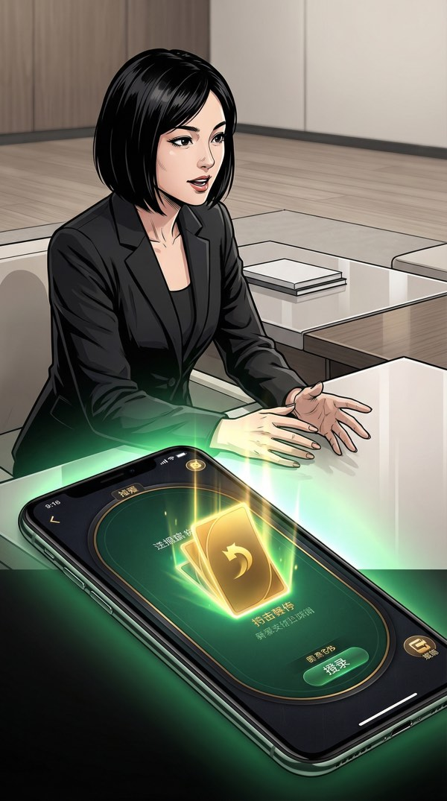
系统"翻牌"了。卡牌翻转的动画意外地酷——像赌场荷官甩牌的慢动作。
然后信息出来了。
🃏 陈薇的底牌:
她自己非常想投你，但合伙人马总不同意。
她来见你是自己的决定，不是基金的决定。
她需要你给她一个"无法拒绝的理由"去说服马总。
关键词: 技术壁垒
牌面清晰，老板。该你出牌了。
原来如此。
她不是来评估我的——她是来"收集弹药"的。她需要我给她武器，让她回去说服马总。
这完全改变了我的策略。不用让她相信我好，而是让她能让马总相信我好。
筹码: 800/1000
牌局: 进行中
优势: ★★★☆
我调整了策略。不再泛泛介绍，直奔陈薇需要的"弹药"——技术壁垒。
"我们的核心模型用了一种非公开的注意力机制改进，留存率高不是因为内容好，是因为模型能预测用户在第几秒会划走，然后在那一秒制造反转。这个能力，目前赛道里没有第二家能做到。"
她的笔速变了。之前是偶尔记一笔，现在是刷刷刷地写。
✅ 命中。对手防御值下降。
筹码+50（博弈奖励）
做得不错，老板。继续保持。
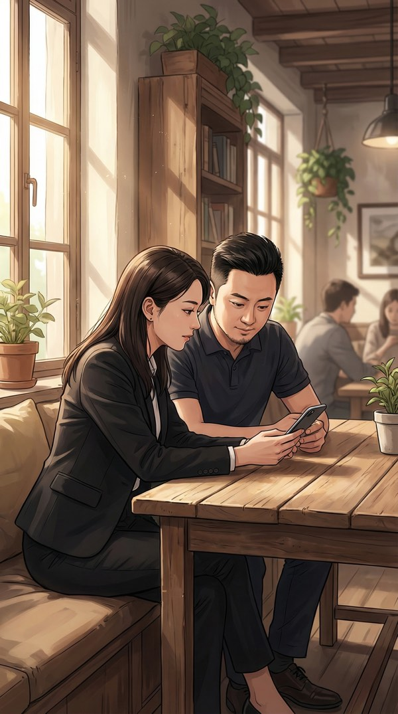
聊了四十分钟，氛围完全变了。
她不再是审核我的投资人，我也不再是被审的创业者。我们变成了同一个牌桌上的同一边——想赢的人，都在想怎么让马总掏钱。
ACT 3 · 系统的Bug
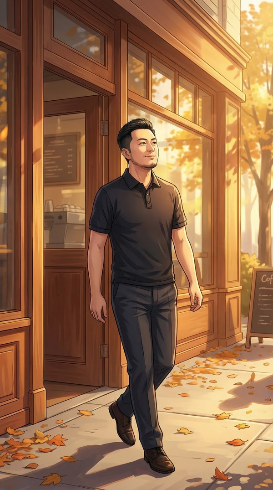
出了咖啡馆，阳光打在脸上暖洋洋的。
陈薇说"我这周跟马总汇报，下周给你消息"。语气不像客套，更像是同盟军约好了下次作战时间。
🏆 牌局结算: 小胜一局
筹码余额: 850
请注意，真正的大牌局还没开始。——你的荷官
回去的路上我翻了翻PokerOS的"教程"。上面写着：
"读牌能力仅在博弈场景中激活。非博弈场景使用可能产生未知结果。"
未知结果？什么意思？
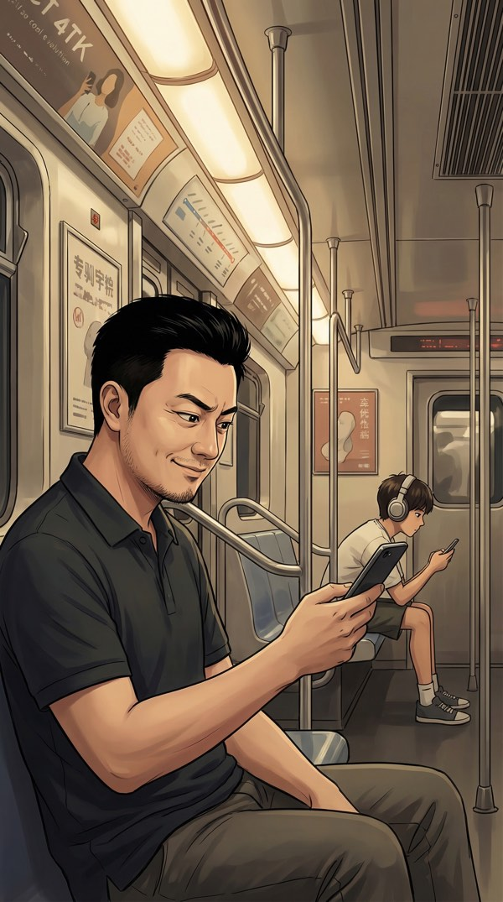
在地铁上，我对着对面一个戴耳机的小哥按了一下"读牌"。
就是好奇。
⚠️ 非博弈场景。读牌结果可能不稳定。
消耗筹码: 50
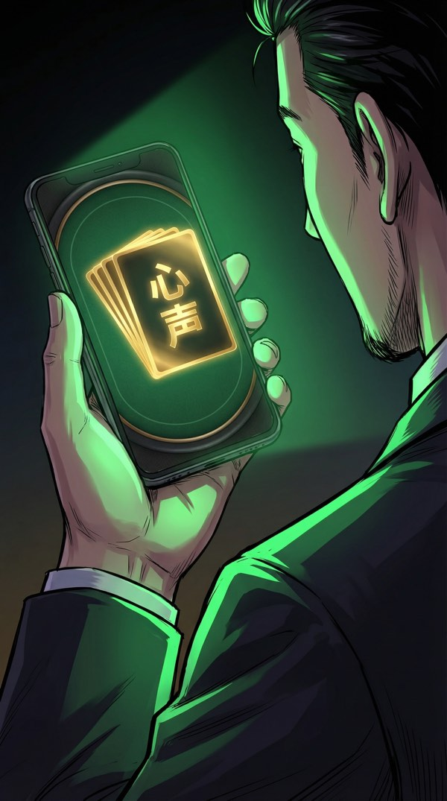
……读到的是我自己的内心独白。
我人傻了。
🃏 读牌结果:
"今天那个陈薇其实挺好看的，笑起来有酒窝……
等等，我在想什么？专注，朱江，专注！
你是来融资的不是来相亲的！"
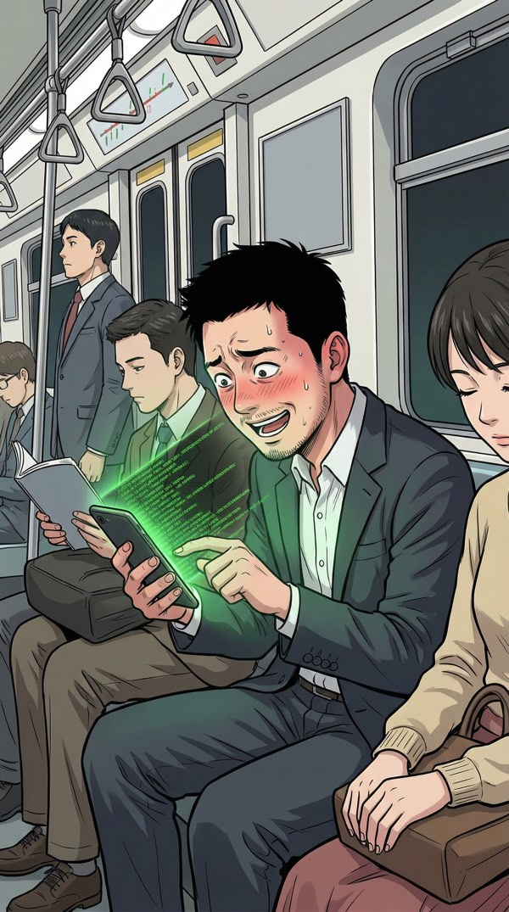
系统开始疯狂输出我的内心独白。全是些不能让任何人看到的废话。我疯狂按关闭，它不停。
"早餐那个包子是不是馊了"
"马总会不会是光头"
"如果融不到钱就回去卖手抓饼，手抓饼利润率其实挺高的……"
"陈薇的红色耳钉到底是什么牌子"
"我刚才是不是有口臭"
老板，你的内心活动比你的BP还丰富。——你的荷官
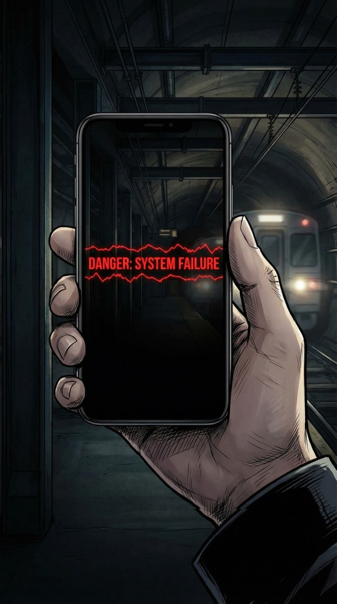
总算安静了。我靠在座位上喘气。
然后——在屏幕变黑的最后一帧，有一行红色小字一闪而过。
快到我不确定自己是不是看花了眼。
⚠️ 系统检测到异常：另一位PokerOS用户已接入您的牌局。
是陈薇？是马总？还是……别人？
—— 第一章 · 完 ——
第二章 · 当系统开始读我自己的底牌
筹码: 800
等级: 菜鸟
牌局胜率: 1/1